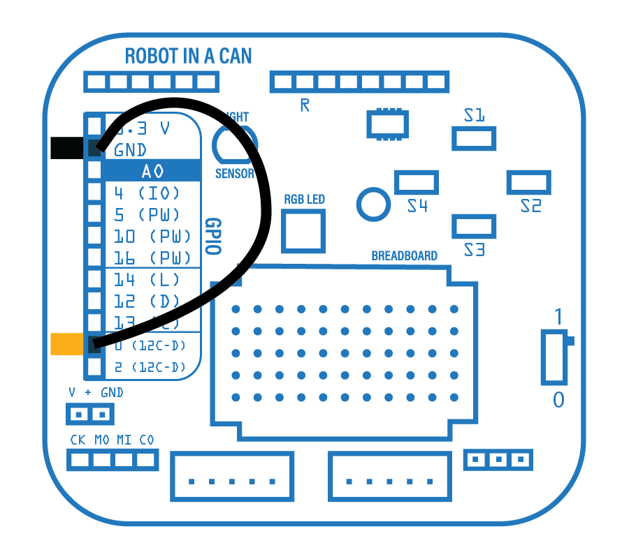
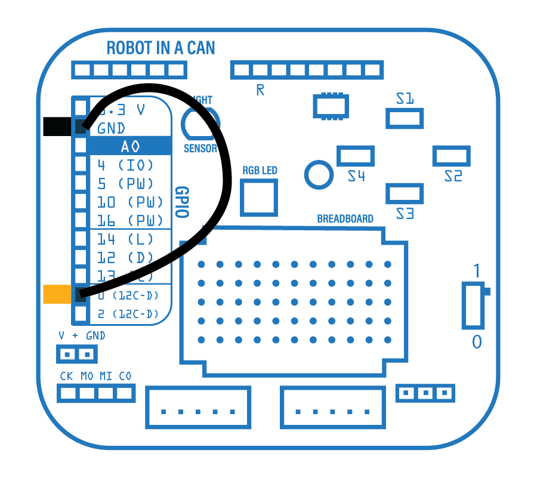

Online RIAC Firmware Installer
Please connect Pin0 to GND, before powering on your eBrain. This will put your eBrain into BOOT mode. Then Connect your eBrain via USB to update firmware.
Select your product
Please connect Pin0 to GND, before powering on your eBrain. This will put your eBrain into BOOT mode. Then Connect your eBrain via USB to update firmware.
Select your product